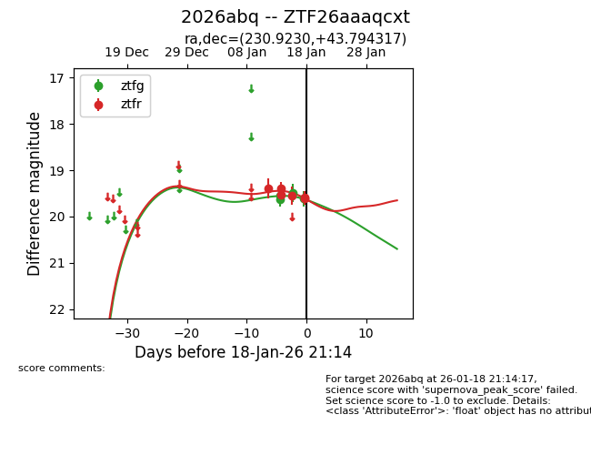
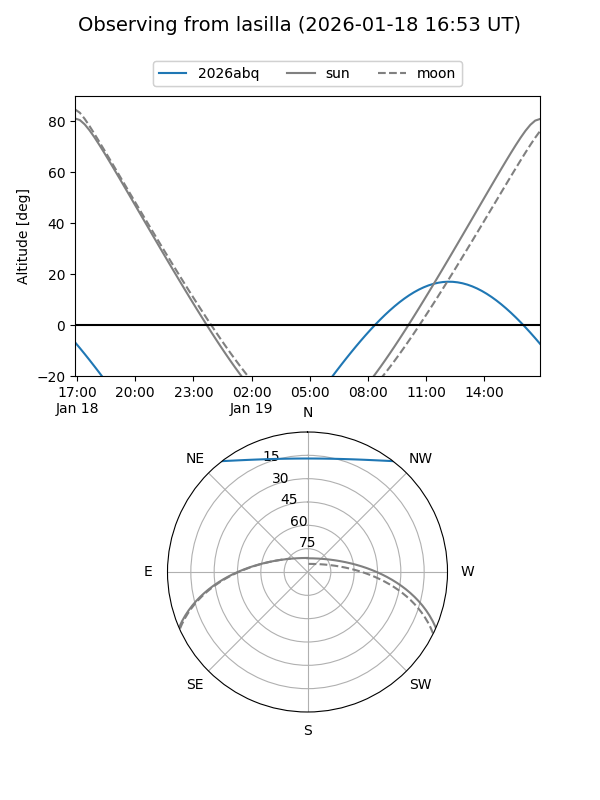
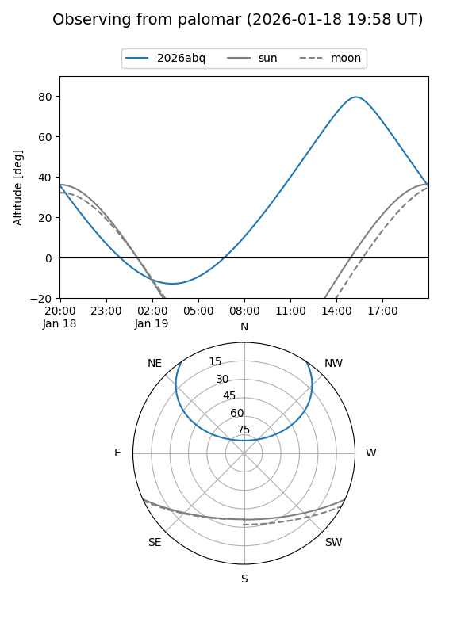
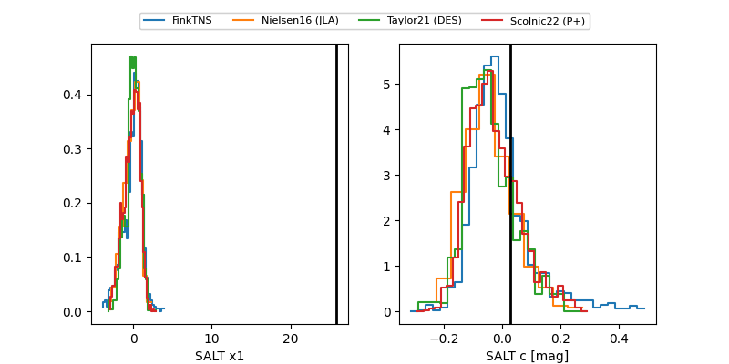

2026abq
Target 2026abq at 2026-01-16 12:45
Aliases and brokers:
FINK: link
Lasair: link
ALeRCE: link
TNS: link
YSE: link
alt names
ZTF26aaaqcxt (ztf,fink_ztf)
2026abq (tns,yse)
Coordinates:
equatorial (ra, dec) = 230.9230,+43.79432
equatorial (HMS+DMS) = 15:23:41.52,+43:47:39.54
galactic (l, b) = (71.6519,+55.22196)
Flags:
Photometry:
last ztfg=19.54, ztfr=19.54
2 ztfg, 4 ztfr detections
Lightcurve

Visibility


Additional plots
